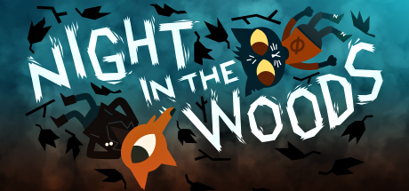

Night in the Woods

At the end of everything, hold on to anything.
I first played this game couple weeks ago, and it absolutely blew me back. Night in the Woods is an absolutely delightful game that I couldn't get enough from and left me wanting more.
Night in the Woods is about a university student called Mae Borowski dropping out from uni and returning back home to her home town of Possum Springs. However her return home is abruptley disturbed by the mysterious dissapearance of one of her friends, and the discovery of a severed arm.